Tier IX Tanks
The Best Performing Tanks
Relative WR
The graph shows the tanks with the highest Relative WR. That is the average of players’ WR in a tank compared to their average WR at the tier (in all same tier tanks). Relative WR is a measure of the performance/strength of the tank.
- All the statistics are about battles fought during the update 7.1 only.
- The impact of “Stock-grind battles” is reduced based on tier-specific requirement for total battles at the end of the update. Only players with more than 0-152 (depending on the tier) battles in a tank in the end of the update are included to eliminate the impact of the first battles in the tank (with sub-100% crew / modules).
- The players need to have 10-20 battles in a tank and 20-40 battles at the tier during the update.
- Average WR is the players’s average WR in the tank
- Player WR at Tier is the average WR of the players of the tank at the tier. Since different tiers have different difficulty, it is more meaningful to compare players’ performance in the same tier tanks.
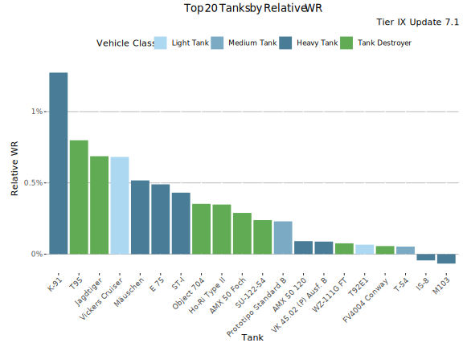
Highest Relative WR - Table
| Tank | Relative WR | Average WR | Player WR at Tier | Players | Battles/Player | Vehicle Class | Tank type |
|---|---|---|---|---|---|---|---|
| K-91 | 1.34% | 54.7% | 53.4% | 6 259 | 72 | Heavy Tank | Premium |
| T95 | 0.87% | 52.1% | 51.2% | 783 | 85 | Tank Destroyer | Researchable |
| Jagdtiger | 0.85% | 51.6% | 50.7% | 2 805 | 83 | Tank Destroyer | Researchable |
| Vickers Cruiser | 0.76% | 58.3% | 57.5% | 2 605 | 152 | Light Tank | Researchable |
| Mäuschen | 0.61% | 51% | 50.4% | 1 170 | 89 | Heavy Tank | Researchable |
| E 75 | 0.6% | 50.7% | 50.1% | 4 770 | 74 | Heavy Tank | Researchable |
| ST-I | 0.5% | 50.3% | 49.8% | 1 857 | 82 | Heavy Tank | Researchable |
| Object 704 | 0.39% | 50.3% | 49.9% | 3 742 | 83 | Tank Destroyer | Researchable |
| Ho-Ri Type II | 0.37% | 52.3% | 51.9% | 1 249 | 107 | Tank Destroyer | Researchable |
| AMX 50 Foch | 0.28% | 51.5% | 51.2% | 820 | 93 | Tank Destroyer | Researchable |
| SU-122-54 | 0.27% | 51.9% | 51.6% | 1 346 | 77 | Tank Destroyer | Researchable |
| Prototipo Standard B | 0.25% | 51.5% | 51.3% | 5 456 | 93 | Medium Tank | Researchable |
| AMX 50 120 | 0.15% | 50.1% | 50% | 2 488 | 83 | Heavy Tank | Researchable |
| VK 45.02 (P) Ausf. B | 0.14% | 50.4% | 50.3% | 1 049 | 74 | Heavy Tank | Researchable |
| T-54 | 0.1% | 50.9% | 50.8% | 5 966 | 72 | Medium Tank | Researchable |
| T92E1 | 0.05% | 52.8% | 52.8% | 9 572 | 107 | Light Tank | Researchable |
| IS-8 | 0.05% | 48.8% | 48.7% | 3 614 | 72 | Heavy Tank | Researchable |
| FV4004 Conway | 0.05% | 52.6% | 52.6% | 2 088 | 91 | Tank Destroyer | Researchable |
| WZ-111G FT | 0.01% | 51% | 51% | 901 | 87 | Tank Destroyer | Researchable |
| M103 | -0.07% | 49.8% | 49.8% | 1 957 | 80 | Heavy Tank | Researchable |
Highest Average WR
This graph shows the tanks with the highest average WR at tier IX during update 7.1. Player WR denotes the tank’s players’ average WR across all the tanks during the update. Only tanks with more than 400 players are listed. This may filter out few upcoming tanks that are being tested.
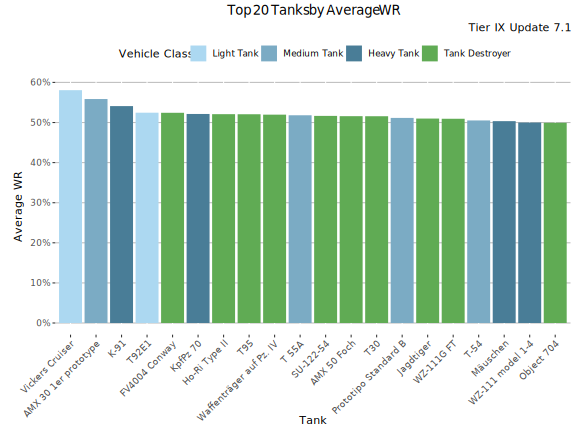
Highest Average WR - Table
Average WR denotes average WR in a tank across all the players during the update. Player WR denotes the tank’s players’ average WR across all the tanks during the update.
| Tank | Average WR | Player WR at Tier | Players | Battles/Player | Vehicle Class | Tank type |
|---|---|---|---|---|---|---|
| Vickers Cruiser | 58.2% | 57.6% | 3 314 | 153 | Light Tank | Researchable |
| AMX 30 1er prototype | 56.3% | 56.5% | 5 046 | 66 | Medium Tank | Premium |
| K-91 | 54.4% | 53.3% | 8 604 | 72 | Heavy Tank | Premium |
| T92E1 | 52.5% | 52.5% | 13 288 | 110 | Light Tank | Researchable |
| FV4004 Conway | 52.5% | 52.4% | 2 623 | 96 | Tank Destroyer | Researchable |
| KpfPz 70 | 52.4% | 52.7% | 8 732 | 64 | Heavy Tank | Premium |
| T 55A | 52.3% | 52.4% | 1 923 | 50 | Medium Tank | Premium |
| T95 | 52.2% | 51.5% | 1 121 | 90 | Tank Destroyer | Researchable |
| Ho-Ri Type II | 52.2% | 51.9% | 1 652 | 110 | Tank Destroyer | Researchable |
| Waffenträger auf Pz. IV | 52.1% | 52.3% | 20 380 | 118 | Tank Destroyer | Researchable |
| AMX 50 Foch | 51.7% | 51.6% | 1 104 | 103 | Tank Destroyer | Researchable |
| SU-122-54 | 51.7% | 51.5% | 1 763 | 81 | Tank Destroyer | Researchable |
| T30 | 51.6% | 51.8% | 4 294 | 81 | Tank Destroyer | Researchable |
| Jagdtiger | 51.3% | 50.8% | 4 279 | 90 | Tank Destroyer | Researchable |
| Prototipo Standard B | 51.3% | 51.1% | 7 288 | 98 | Medium Tank | Researchable |
| WZ-111G FT | 50.9% | 50.9% | 1 197 | 88 | Tank Destroyer | Researchable |
| T-54 | 50.7% | 50.6% | 9 418 | 77 | Medium Tank | Researchable |
| Mäuschen | 50.5% | 50.2% | 1 965 | 92 | Heavy Tank | Researchable |
| E 75 | 50.1% | 49.8% | 8 246 | 83 | Heavy Tank | Researchable |
| Object 704 | 50.1% | 49.8% | 5 712 | 88 | Tank Destroyer | Researchable |
Highest Average Damage
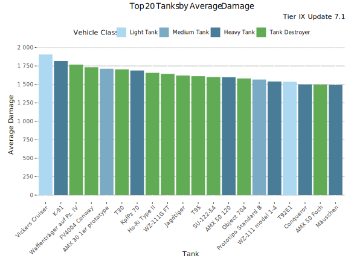
Highest Average Damage - Table
| Tank | Average Damage | Average WR | Player WR at Tier | Players | Battles/Player | Vehicle Class | Tank type |
|---|---|---|---|---|---|---|---|
| Vickers Cruiser | 1 919 | 58.2% | 57.6% | 3 314 | 153 | Light Tank | Researchable |
| K-91 | 1 845 | 54.4% | 53.3% | 8 604 | 72 | Heavy Tank | Premium |
| Waffenträger auf Pz. IV | 1 781 | 52.1% | 52.3% | 20 380 | 118 | Tank Destroyer | Researchable |
| FV4004 Conway | 1 744 | 52.5% | 52.4% | 2 623 | 96 | Tank Destroyer | Researchable |
| AMX 30 1er prototype | 1 742 | 56.3% | 56.5% | 5 046 | 66 | Medium Tank | Premium |
| T30 | 1 712 | 51.6% | 51.8% | 4 294 | 81 | Tank Destroyer | Researchable |
| KpfPz 70 | 1 709 | 52.4% | 52.7% | 8 732 | 64 | Heavy Tank | Premium |
| Ho-Ri Type II | 1 670 | 52.2% | 51.9% | 1 652 | 110 | Tank Destroyer | Researchable |
| WZ-111G FT | 1 656 | 50.9% | 50.9% | 1 197 | 88 | Tank Destroyer | Researchable |
| Jagdtiger | 1 654 | 51.3% | 50.8% | 4 279 | 90 | Tank Destroyer | Researchable |
| T95 | 1 628 | 52.2% | 51.5% | 1 121 | 90 | Tank Destroyer | Researchable |
| AMX 50 120 | 1 621 | 49.8% | 49.8% | 3 379 | 90 | Heavy Tank | Researchable |
| SU-122-54 | 1 607 | 51.7% | 51.5% | 1 763 | 81 | Tank Destroyer | Researchable |
| Object 704 | 1 601 | 50.1% | 49.8% | 5 712 | 88 | Tank Destroyer | Researchable |
| Prototipo Standard B | 1 583 | 51.3% | 51.1% | 7 288 | 98 | Medium Tank | Researchable |
| WZ-111 model 1-4 | 1 549 | 50% | 50.3% | 851 | 85 | Heavy Tank | Researchable |
| T92E1 | 1 546 | 52.5% | 52.5% | 13 288 | 110 | Light Tank | Researchable |
| AMX 50 Foch | 1 518 | 51.7% | 51.6% | 1 104 | 103 | Tank Destroyer | Researchable |
| Conqueror | 1 517 | 49.1% | 49.9% | 1 834 | 85 | Heavy Tank | Researchable |
| Mäuschen | 1 513 | 50.5% | 50.2% | 1 965 | 92 | Heavy Tank | Researchable |
Highest Average Kills/Battle
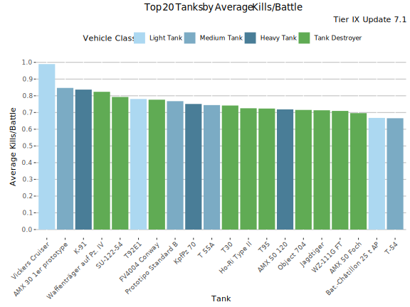
Highest Average Kills/Battle - Table
| Tank | Average Kills/Battle | Average WR | Player WR at Tier | Players | Battles/Player | Vehicle Class | Tank type |
|---|---|---|---|---|---|---|---|
| Vickers Cruiser | 1.00 | 58.2% | 57.6% | 3 314 | 153 | Light Tank | Researchable |
| AMX 30 1er prototype | 0.86 | 56.3% | 56.5% | 5 046 | 66 | Medium Tank | Premium |
| K-91 | 0.85 | 54.4% | 53.3% | 8 604 | 72 | Heavy Tank | Premium |
| Waffenträger auf Pz. IV | 0.83 | 52.1% | 52.3% | 20 380 | 118 | Tank Destroyer | Researchable |
| SU-122-54 | 0.79 | 51.7% | 51.5% | 1 763 | 81 | Tank Destroyer | Researchable |
| T92E1 | 0.79 | 52.5% | 52.5% | 13 288 | 110 | Light Tank | Researchable |
| FV4004 Conway | 0.78 | 52.5% | 52.4% | 2 623 | 96 | Tank Destroyer | Researchable |
| Prototipo Standard B | 0.78 | 51.3% | 51.1% | 7 288 | 98 | Medium Tank | Researchable |
| KpfPz 70 | 0.76 | 52.4% | 52.7% | 8 732 | 64 | Heavy Tank | Premium |
| T 55A | 0.76 | 52.3% | 52.4% | 1 923 | 50 | Medium Tank | Premium |
| T30 | 0.74 | 51.6% | 51.8% | 4 294 | 81 | Tank Destroyer | Researchable |
| T95 | 0.73 | 52.2% | 51.5% | 1 121 | 90 | Tank Destroyer | Researchable |
| Ho-Ri Type II | 0.73 | 52.2% | 51.9% | 1 652 | 110 | Tank Destroyer | Researchable |
| Jagdtiger | 0.73 | 51.3% | 50.8% | 4 279 | 90 | Tank Destroyer | Researchable |
| AMX 50 120 | 0.73 | 49.8% | 49.8% | 3 379 | 90 | Heavy Tank | Researchable |
| Object 704 | 0.72 | 50.1% | 49.8% | 5 712 | 88 | Tank Destroyer | Researchable |
| WZ-111G FT | 0.72 | 50.9% | 50.9% | 1 197 | 88 | Tank Destroyer | Researchable |
| AMX 50 Foch | 0.71 | 51.7% | 51.6% | 1 104 | 103 | Tank Destroyer | Researchable |
| T-54 | 0.68 | 50.7% | 50.6% | 9 418 | 77 | Medium Tank | Researchable |
| Bat.-Châtillon 25 t AP | 0.67 | 48.2% | 49.9% | 2 003 | 82 | Light Tank | Researchable |
Highest Spot Rate
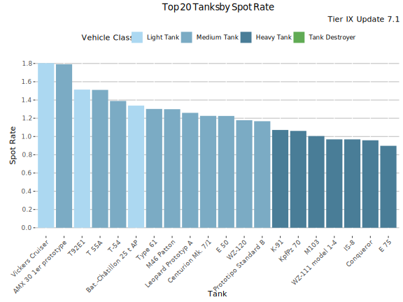
Highest Spot Rate - Table
| Tank | Spot Rate | Average WR | Player WR at Tier | Players | Battles/Player | Vehicle Class | Tank type |
|---|---|---|---|---|---|---|---|
| Vickers Cruiser | 1.81 | 58.2% | 57.6% | 3 314 | 153 | Light Tank | Researchable |
| AMX 30 1er prototype | 1.80 | 56.3% | 56.5% | 5 046 | 66 | Medium Tank | Premium |
| T92E1 | 1.52 | 52.5% | 52.5% | 13 288 | 110 | Light Tank | Researchable |
| T 55A | 1.52 | 52.3% | 52.4% | 1 923 | 50 | Medium Tank | Premium |
| T-54 | 1.39 | 50.7% | 50.6% | 9 418 | 77 | Medium Tank | Researchable |
| Bat.-Châtillon 25 t AP | 1.35 | 48.2% | 49.9% | 2 003 | 82 | Light Tank | Researchable |
| Type 61 | 1.32 | 49.3% | 50.8% | 1 311 | 99 | Medium Tank | Researchable |
| M46 Patton | 1.31 | 50.1% | 50.4% | 1 189 | 76 | Medium Tank | Researchable |
| Leopard Prototyp A | 1.27 | 47.2% | 48.4% | 3 400 | 84 | Medium Tank | Researchable |
| E 50 | 1.24 | 49.6% | 50.1% | 2 542 | 88 | Medium Tank | Researchable |
| Centurion Mk. 7/1 | 1.23 | 49.7% | 50.6% | 1 786 | 76 | Medium Tank | Researchable |
| WZ-120 | 1.19 | 49.9% | 50.8% | 1 626 | 94 | Medium Tank | Researchable |
| Prototipo Standard B | 1.17 | 51.3% | 51.1% | 7 288 | 98 | Medium Tank | Researchable |
| K-91 | 1.08 | 54.4% | 53.3% | 8 604 | 72 | Heavy Tank | Premium |
| KpfPz 70 | 1.07 | 52.4% | 52.7% | 8 732 | 64 | Heavy Tank | Premium |
| M103 | 1.02 | 49.4% | 49.6% | 2 937 | 86 | Heavy Tank | Researchable |
| IS-8 | 0.99 | 48.2% | 48.3% | 6 316 | 81 | Heavy Tank | Researchable |
| WZ-111 model 1-4 | 0.97 | 50% | 50.3% | 851 | 85 | Heavy Tank | Researchable |
| Conqueror | 0.97 | 49.1% | 49.9% | 1 834 | 85 | Heavy Tank | Researchable |
| E 75 | 0.92 | 50.1% | 49.8% | 8 246 | 83 | Heavy Tank | Researchable |
Highest Hit Rate
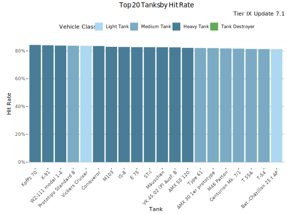
Highest Hit Rate - Table
| Tank | Hit Rate | Average WR | Player WR at Tier | Players | Battles/Player | Vehicle Class | Tank type |
|---|---|---|---|---|---|---|---|
| KpfPz 70 | 84.4% | 52.4% | 52.7% | 8 732 | 64 | Heavy Tank | Premium |
| K-91 | 84.3% | 54.4% | 53.3% | 8 604 | 72 | Heavy Tank | Premium |
| WZ-111 model 1-4 | 83.9% | 50% | 50.3% | 851 | 85 | Heavy Tank | Researchable |
| Prototipo Standard B | 83.8% | 51.3% | 51.1% | 7 288 | 98 | Medium Tank | Researchable |
| Vickers Cruiser | 83.7% | 58.2% | 57.6% | 3 314 | 153 | Light Tank | Researchable |
| Conqueror | 83.6% | 49.1% | 49.9% | 1 834 | 85 | Heavy Tank | Researchable |
| M103 | 83.2% | 49.4% | 49.6% | 2 937 | 86 | Heavy Tank | Researchable |
| IS-8 | 83.1% | 48.2% | 48.3% | 6 316 | 81 | Heavy Tank | Researchable |
| E 75 | 83% | 50.1% | 49.8% | 8 246 | 83 | Heavy Tank | Researchable |
| ST-I | 82.8% | 49.8% | 49.5% | 2 921 | 88 | Heavy Tank | Researchable |
| Mäuschen | 82.8% | 50.5% | 50.2% | 1 965 | 92 | Heavy Tank | Researchable |
| VK 45.02 (P) Ausf. B | 82.6% | 50% | 49.9% | 1 488 | 80 | Heavy Tank | Researchable |
| AMX 50 120 | 82.3% | 49.8% | 49.8% | 3 379 | 90 | Heavy Tank | Researchable |
| AMX 30 1er prototype | 82.3% | 56.3% | 56.5% | 5 046 | 66 | Medium Tank | Premium |
| Type 61 | 82.2% | 49.3% | 50.8% | 1 311 | 99 | Medium Tank | Researchable |
| M46 Patton | 81.9% | 50.1% | 50.4% | 1 189 | 76 | Medium Tank | Researchable |
| Centurion Mk. 7/1 | 81.8% | 49.7% | 50.6% | 1 786 | 76 | Medium Tank | Researchable |
| T 55A | 81.5% | 52.3% | 52.4% | 1 923 | 50 | Medium Tank | Premium |
| T-54 | 81.5% | 50.7% | 50.6% | 9 418 | 77 | Medium Tank | Researchable |
| E 50 | 81.4% | 49.6% | 50.1% | 2 542 | 88 | Medium Tank | Researchable |
Most popular Tanks

Most played Tanks
This graph shows the most played tanks by number of battles during the update 7.1.
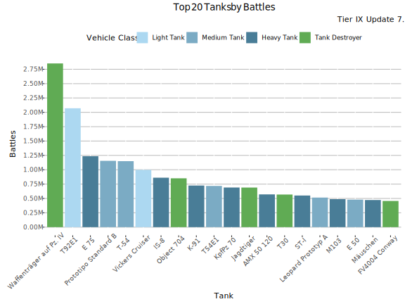
Most Played Tanks - Table
| Tank | Battles | Average WR | Player WR at Tier | Players | Battles/Player | Vehicle Class | Tank type |
|---|---|---|---|---|---|---|---|
| Waffenträger auf Pz. IV | 2.90M | 51.8% | 52.7% | 51 515 | 55 | Tank Destroyer | Researchable |
| T92E1 | 2.10M | 52% | 53% | 50 973 | 41 | Light Tank | Researchable |
| E 75 | 1.20M | 51.5% | 51.2% | 50 821 | 24 | Heavy Tank | Researchable |
| Prototipo Standard B | 1.20M | 52.3% | 52% | 33 244 | 35 | Medium Tank | Researchable |
| T-54 | 1.10M | 51.7% | 51.9% | 50 258 | 23 | Medium Tank | Researchable |
| Vickers Cruiser | 1.00M | 56.7% | 57.6% | 18 768 | 53 | Light Tank | Researchable |
| IS-8 | 0.86M | 49.8% | 50% | 37 790 | 23 | Heavy Tank | Researchable |
| Object 704 | 0.85M | 51.8% | 51.2% | 30 877 | 28 | Tank Destroyer | Researchable |
| K-91 | 0.72M | 55.1% | 53.6% | 24 176 | 30 | Heavy Tank | Premium |
| T54E1 | 0.72M | 50.2% | 51% | 28 514 | 25 | Medium Tank | Researchable |
| KpfPz 70 | 0.69M | 53.2% | 53.5% | 30 585 | 23 | Heavy Tank | Premium |
| Jagdtiger | 0.69M | 53.2% | 51.9% | 25 927 | 27 | Tank Destroyer | Researchable |
| AMX 50 120 | 0.57M | 51.8% | 51.3% | 22 200 | 26 | Heavy Tank | Researchable |
| T30 | 0.57M | 53.3% | 53.5% | 22 730 | 25 | Tank Destroyer | Researchable |
| ST-I | 0.55M | 52% | 51.3% | 23 293 | 24 | Heavy Tank | Researchable |
| Leopard Prototyp A | 0.52M | 48.4% | 50.5% | 23 784 | 22 | Medium Tank | Researchable |
| M103 | 0.49M | 51.7% | 51.3% | 19 184 | 25 | Heavy Tank | Researchable |
| E 50 | 0.48M | 51.2% | 51.9% | 21 358 | 22 | Medium Tank | Researchable |
| Mäuschen | 0.47M | 51.6% | 50.9% | 20 265 | 23 | Heavy Tank | Researchable |
| FV4004 Conway | 0.46M | 53.9% | 53.5% | 14 458 | 32 | Tank Destroyer | Researchable |
Lowest Performing Tanks
Lowest Relative WR
The graph shows the tanks with the lowest Relative WR. That is the average of players’ WR in a tank compared to their average WR at the tier (in all same tier tanks). Relative WR is a measure of the performance/strength of the tank.
- All the statistics are about battles fought during the update 7.1 only.
- The impact of “Stock-grind battles” is reduced based on tier-specific requirement for total battles at the end of the update. Only players with more than 0-152 (depending on the tier) battles in a tank in the end of the update are included to eliminate the impact of the first battles in the tank (with sub-100% crew / modules).
- The players need to have 10-20 battles in a tank and 20-40 battles at the tier during the update.
- Average WR is the players’s average WR in the tank
- Player WR at Tier is the average WR of the players of the tank at the tier. Since different tiers have different difficulty, it is more meaningful to compare players’ performance in the same tier tanks.
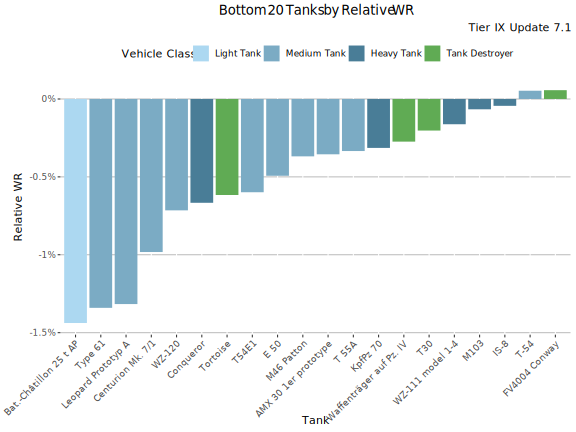
Lowest Relative WR - Table
| Tank | Relative WR | Average WR | Player WR at Tier | Players | Battles/Player | Vehicle Class | Tank type |
|---|---|---|---|---|---|---|---|
| Bat.-Châtillon 25 t AP | -1.68% | 48.7% | 50.4% | 1 509 | 78 | Light Tank | Researchable |
| Type 61 | -1.5% | 49.6% | 51.1% | 939 | 95 | Medium Tank | Researchable |
| Leopard Prototyp A | -1.43% | 47.6% | 49% | 2 175 | 75 | Medium Tank | Researchable |
| Centurion Mk. 7/1 | -1.14% | 50.1% | 51.2% | 1 201 | 69 | Medium Tank | Researchable |
| WZ-120 | -0.87% | 49.9% | 50.7% | 1 193 | 87 | Medium Tank | Researchable |
| Tortoise | -0.81% | 47.9% | 48.7% | 937 | 109 | Tank Destroyer | Researchable |
| Conqueror | -0.76% | 49.6% | 50.3% | 1 328 | 80 | Heavy Tank | Researchable |
| T54E1 | -0.71% | 48.6% | 49.3% | 2 789 | 84 | Medium Tank | Researchable |
| E 50 | -0.55% | 49.8% | 50.4% | 1 819 | 82 | Medium Tank | Researchable |
| AMX 30 1er prototype | -0.43% | 55.9% | 56.3% | 3 819 | 68 | Medium Tank | Premium |
| KpfPz 70 | -0.35% | 52.5% | 52.9% | 6 169 | 66 | Heavy Tank | Premium |
| M46 Patton | -0.32% | 50.7% | 51% | 837 | 68 | Medium Tank | Researchable |
| Waffenträger auf Pz. IV | -0.32% | 52.2% | 52.5% | 14 145 | 117 | Tank Destroyer | Researchable |
| T 55A | -0.24% | 52.2% | 52.5% | 1 481 | 49 | Medium Tank | Premium |
| T30 | -0.22% | 51.9% | 52.2% | 3 195 | 78 | Tank Destroyer | Researchable |
| WZ-111 model 1-4 | -0.21% | 50.3% | 50.5% | 640 | 79 | Heavy Tank | Researchable |
| M103 | -0.07% | 49.8% | 49.8% | 1 957 | 80 | Heavy Tank | Researchable |
| WZ-111G FT | 0.01% | 51% | 51% | 901 | 87 | Tank Destroyer | Researchable |
| FV4004 Conway | 0.05% | 52.6% | 52.6% | 2 088 | 91 | Tank Destroyer | Researchable |
| IS-8 | 0.05% | 48.8% | 48.7% | 3 614 | 72 | Heavy Tank | Researchable |
Lowest Average WR
This graph shows the tanks with the lowest average WR at tier IX during update 7.1. Player WR denotes the tank’s players’ average WR across all the tanks during the update. Only tanks with more than 400 players are listed. This may filter out few upcoming tanks that are being tested.
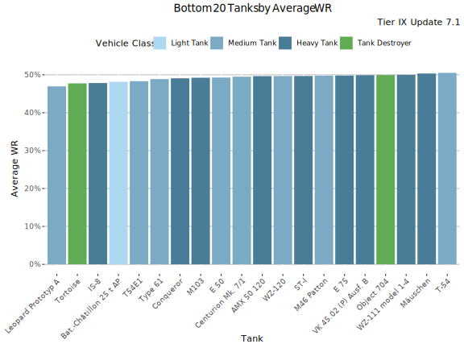
Lowest Average WR - Table
Average WR denotes average WR in a tank across all the players during the update. Player WR denotes the tank’s players’ average WR across all the tanks during the update.
| Tank | Average WR | Player WR at Tier | Players | Battles/Player | Vehicle Class | Tank type |
|---|---|---|---|---|---|---|
| Leopard Prototyp A | 47.2% | 48.4% | 3 400 | 84 | Medium Tank | Researchable |
| Tortoise | 47.7% | 48.4% | 1 478 | 117 | Tank Destroyer | Researchable |
| IS-8 | 48.2% | 48.3% | 6 316 | 81 | Heavy Tank | Researchable |
| Bat.-Châtillon 25 t AP | 48.2% | 49.9% | 2 003 | 82 | Light Tank | Researchable |
| T54E1 | 48.4% | 49.1% | 3 805 | 89 | Medium Tank | Researchable |
| Conqueror | 49.1% | 49.9% | 1 834 | 85 | Heavy Tank | Researchable |
| Type 61 | 49.3% | 50.8% | 1 311 | 99 | Medium Tank | Researchable |
| M103 | 49.4% | 49.6% | 2 937 | 86 | Heavy Tank | Researchable |
| E 50 | 49.6% | 50.1% | 2 542 | 88 | Medium Tank | Researchable |
| Centurion Mk. 7/1 | 49.7% | 50.6% | 1 786 | 76 | Medium Tank | Researchable |
| ST-I | 49.8% | 49.5% | 2 921 | 88 | Heavy Tank | Researchable |
| AMX 50 120 | 49.8% | 49.8% | 3 379 | 90 | Heavy Tank | Researchable |
| WZ-120 | 49.9% | 50.8% | 1 626 | 94 | Medium Tank | Researchable |
| WZ-111 model 1-4 | 50% | 50.3% | 851 | 85 | Heavy Tank | Researchable |
| VK 45.02 (P) Ausf. B | 50% | 49.9% | 1 488 | 80 | Heavy Tank | Researchable |
| M46 Patton | 50.1% | 50.4% | 1 189 | 76 | Medium Tank | Researchable |
| Object 704 | 50.1% | 49.8% | 5 712 | 88 | Tank Destroyer | Researchable |
| E 75 | 50.1% | 49.8% | 8 246 | 83 | Heavy Tank | Researchable |
| Mäuschen | 50.5% | 50.2% | 1 965 | 92 | Heavy Tank | Researchable |
| T-54 | 50.7% | 50.6% | 9 418 | 77 | Medium Tank | Researchable |
Lowest Average Damage
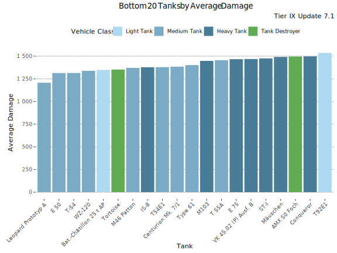
Lowest Average Damage - Table
| Tank | Average Damage | Average WR | Player WR at Tier | Players | Battles/Player | Vehicle Class | Tank type |
|---|---|---|---|---|---|---|---|
| Leopard Prototyp A | 1 237 | 47.2% | 48.4% | 3 400 | 84 | Medium Tank | Researchable |
| T-54 | 1 339 | 50.7% | 50.6% | 9 418 | 77 | Medium Tank | Researchable |
| E 50 | 1 351 | 49.6% | 50.1% | 2 542 | 88 | Medium Tank | Researchable |
| Bat.-Châtillon 25 t AP | 1 360 | 48.2% | 49.9% | 2 003 | 82 | Light Tank | Researchable |
| WZ-120 | 1 363 | 49.9% | 50.8% | 1 626 | 94 | Medium Tank | Researchable |
| Tortoise | 1 366 | 47.7% | 48.4% | 1 478 | 117 | Tank Destroyer | Researchable |
| M46 Patton | 1 394 | 50.1% | 50.4% | 1 189 | 76 | Medium Tank | Researchable |
| T54E1 | 1 401 | 48.4% | 49.1% | 3 805 | 89 | Medium Tank | Researchable |
| Centurion Mk. 7/1 | 1 401 | 49.7% | 50.6% | 1 786 | 76 | Medium Tank | Researchable |
| IS-8 | 1 420 | 48.2% | 48.3% | 6 316 | 81 | Heavy Tank | Researchable |
| Type 61 | 1 432 | 49.3% | 50.8% | 1 311 | 99 | Medium Tank | Researchable |
| M103 | 1 478 | 49.4% | 49.6% | 2 937 | 86 | Heavy Tank | Researchable |
| T 55A | 1 478 | 52.3% | 52.4% | 1 923 | 50 | Medium Tank | Premium |
| VK 45.02 (P) Ausf. B | 1 485 | 50% | 49.9% | 1 488 | 80 | Heavy Tank | Researchable |
| ST-I | 1 501 | 49.8% | 49.5% | 2 921 | 88 | Heavy Tank | Researchable |
| E 75 | 1 506 | 50.1% | 49.8% | 8 246 | 83 | Heavy Tank | Researchable |
| Mäuschen | 1 513 | 50.5% | 50.2% | 1 965 | 92 | Heavy Tank | Researchable |
| Conqueror | 1 517 | 49.1% | 49.9% | 1 834 | 85 | Heavy Tank | Researchable |
| AMX 50 Foch | 1 518 | 51.7% | 51.6% | 1 104 | 103 | Tank Destroyer | Researchable |
| T92E1 | 1 546 | 52.5% | 52.5% | 13 288 | 110 | Light Tank | Researchable |
Lowest Average Kills/Battle
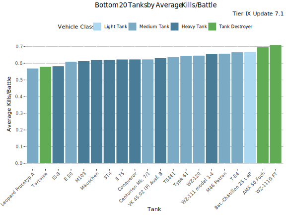
Lowest Average Kills/Battle - Table
| Tank | Average Kills/Battle | Average WR | Player WR at Tier | Players | Battles/Player | Vehicle Class | Tank type |
|---|---|---|---|---|---|---|---|
| Tortoise | 0.58 | 47.7% | 48.4% | 1 478 | 117 | Tank Destroyer | Researchable |
| Leopard Prototyp A | 0.58 | 47.2% | 48.4% | 3 400 | 84 | Medium Tank | Researchable |
| IS-8 | 0.60 | 48.2% | 48.3% | 6 316 | 81 | Heavy Tank | Researchable |
| M103 | 0.62 | 49.4% | 49.6% | 2 937 | 86 | Heavy Tank | Researchable |
| Mäuschen | 0.63 | 50.5% | 50.2% | 1 965 | 92 | Heavy Tank | Researchable |
| Conqueror | 0.63 | 49.1% | 49.9% | 1 834 | 85 | Heavy Tank | Researchable |
| E 50 | 0.63 | 49.6% | 50.1% | 2 542 | 88 | Medium Tank | Researchable |
| ST-I | 0.63 | 49.8% | 49.5% | 2 921 | 88 | Heavy Tank | Researchable |
| Centurion Mk. 7/1 | 0.63 | 49.7% | 50.6% | 1 786 | 76 | Medium Tank | Researchable |
| VK 45.02 (P) Ausf. B | 0.63 | 50% | 49.9% | 1 488 | 80 | Heavy Tank | Researchable |
| E 75 | 0.64 | 50.1% | 49.8% | 8 246 | 83 | Heavy Tank | Researchable |
| T54E1 | 0.65 | 48.4% | 49.1% | 3 805 | 89 | Medium Tank | Researchable |
| WZ-120 | 0.66 | 49.9% | 50.8% | 1 626 | 94 | Medium Tank | Researchable |
| Type 61 | 0.66 | 49.3% | 50.8% | 1 311 | 99 | Medium Tank | Researchable |
| WZ-111 model 1-4 | 0.66 | 50% | 50.3% | 851 | 85 | Heavy Tank | Researchable |
| M46 Patton | 0.67 | 50.1% | 50.4% | 1 189 | 76 | Medium Tank | Researchable |
| Bat.-Châtillon 25 t AP | 0.67 | 48.2% | 49.9% | 2 003 | 82 | Light Tank | Researchable |
| T-54 | 0.68 | 50.7% | 50.6% | 9 418 | 77 | Medium Tank | Researchable |
| AMX 50 Foch | 0.71 | 51.7% | 51.6% | 1 104 | 103 | Tank Destroyer | Researchable |
| WZ-111G FT | 0.72 | 50.9% | 50.9% | 1 197 | 88 | Tank Destroyer | Researchable |
Lowest Spot Rate
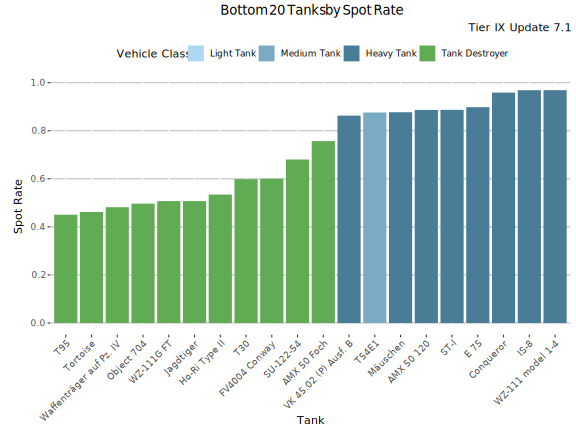
Lowest Spot Rate - Table
| Tank | Spot Rate | Average WR | Player WR at Tier | Players | Battles/Player | Vehicle Class | Tank type |
|---|---|---|---|---|---|---|---|
| T95 | 0.45 | 52.2% | 51.5% | 1 121 | 90 | Tank Destroyer | Researchable |
| Tortoise | 0.47 | 47.7% | 48.4% | 1 478 | 117 | Tank Destroyer | Researchable |
| Waffenträger auf Pz. IV | 0.49 | 52.1% | 52.3% | 20 380 | 118 | Tank Destroyer | Researchable |
| Object 704 | 0.51 | 50.1% | 49.8% | 5 712 | 88 | Tank Destroyer | Researchable |
| WZ-111G FT | 0.51 | 50.9% | 50.9% | 1 197 | 88 | Tank Destroyer | Researchable |
| Jagdtiger | 0.52 | 51.3% | 50.8% | 4 279 | 90 | Tank Destroyer | Researchable |
| Ho-Ri Type II | 0.54 | 52.2% | 51.9% | 1 652 | 110 | Tank Destroyer | Researchable |
| T30 | 0.60 | 51.6% | 51.8% | 4 294 | 81 | Tank Destroyer | Researchable |
| FV4004 Conway | 0.61 | 52.5% | 52.4% | 2 623 | 96 | Tank Destroyer | Researchable |
| SU-122-54 | 0.68 | 51.7% | 51.5% | 1 763 | 81 | Tank Destroyer | Researchable |
| AMX 50 Foch | 0.77 | 51.7% | 51.6% | 1 104 | 103 | Tank Destroyer | Researchable |
| VK 45.02 (P) Ausf. B | 0.87 | 50% | 49.9% | 1 488 | 80 | Heavy Tank | Researchable |
| T54E1 | 0.88 | 48.4% | 49.1% | 3 805 | 89 | Medium Tank | Researchable |
| Mäuschen | 0.89 | 50.5% | 50.2% | 1 965 | 92 | Heavy Tank | Researchable |
| AMX 50 120 | 0.90 | 49.8% | 49.8% | 3 379 | 90 | Heavy Tank | Researchable |
| ST-I | 0.90 | 49.8% | 49.5% | 2 921 | 88 | Heavy Tank | Researchable |
| E 75 | 0.92 | 50.1% | 49.8% | 8 246 | 83 | Heavy Tank | Researchable |
| Conqueror | 0.97 | 49.1% | 49.9% | 1 834 | 85 | Heavy Tank | Researchable |
| WZ-111 model 1-4 | 0.97 | 50% | 50.3% | 851 | 85 | Heavy Tank | Researchable |
| IS-8 | 0.99 | 48.2% | 48.3% | 6 316 | 81 | Heavy Tank | Researchable |
Lowest Hit Rate
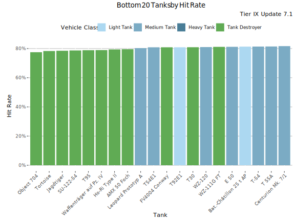
Lowest Hit Rate - Table
| Tank | Hit Rate | Average WR | Player WR at Tier | Players | Battles/Player | Vehicle Class | Tank type |
|---|---|---|---|---|---|---|---|
| Object 704 | 77.6% | 50.1% | 49.8% | 5 712 | 88 | Tank Destroyer | Researchable |
| Tortoise | 78.5% | 47.7% | 48.4% | 1 478 | 117 | Tank Destroyer | Researchable |
| Jagdtiger | 78.7% | 51.3% | 50.8% | 4 279 | 90 | Tank Destroyer | Researchable |
| SU-122-54 | 78.7% | 51.7% | 51.5% | 1 763 | 81 | Tank Destroyer | Researchable |
| T95 | 79% | 52.2% | 51.5% | 1 121 | 90 | Tank Destroyer | Researchable |
| Waffenträger auf Pz. IV | 79.1% | 52.1% | 52.3% | 20 380 | 118 | Tank Destroyer | Researchable |
| Ho-Ri Type II | 79.5% | 52.2% | 51.9% | 1 652 | 110 | Tank Destroyer | Researchable |
| AMX 50 Foch | 79.7% | 51.7% | 51.6% | 1 104 | 103 | Tank Destroyer | Researchable |
| Leopard Prototyp A | 80.4% | 47.2% | 48.4% | 3 400 | 84 | Medium Tank | Researchable |
| FV4004 Conway | 81% | 52.5% | 52.4% | 2 623 | 96 | Tank Destroyer | Researchable |
| T30 | 81% | 51.6% | 51.8% | 4 294 | 81 | Tank Destroyer | Researchable |
| T92E1 | 81% | 52.5% | 52.5% | 13 288 | 110 | Light Tank | Researchable |
| T54E1 | 81% | 48.4% | 49.1% | 3 805 | 89 | Medium Tank | Researchable |
| WZ-120 | 81.2% | 49.9% | 50.8% | 1 626 | 94 | Medium Tank | Researchable |
| WZ-111G FT | 81.2% | 50.9% | 50.9% | 1 197 | 88 | Tank Destroyer | Researchable |
| Bat.-Châtillon 25 t AP | 81.3% | 48.2% | 49.9% | 2 003 | 82 | Light Tank | Researchable |
| E 50 | 81.4% | 49.6% | 50.1% | 2 542 | 88 | Medium Tank | Researchable |
| T-54 | 81.5% | 50.7% | 50.6% | 9 418 | 77 | Medium Tank | Researchable |
| T 55A | 81.5% | 52.3% | 52.4% | 1 923 | 50 | Medium Tank | Premium |
| Centurion Mk. 7/1 | 81.8% | 49.7% | 50.6% | 1 786 | 76 | Medium Tank | Researchable |
Least played Tanks (Players)
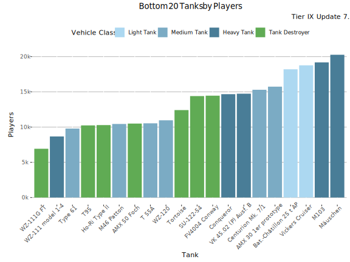
Least played Tanks (Battles)
This graph shows the most played tanks by number of battles during the update 7.1.
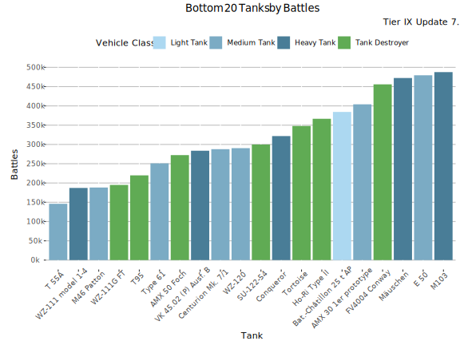
Least Played Tanks - Table
| Tank | Battles | Average WR | Player WR at Tier | Players | Battles/Player | Vehicle Class | Tank type |
|---|---|---|---|---|---|---|---|
| T 55A | 146 059 | 53.2% | 53.2% | 10 533 | 14 | Medium Tank | Premium |
| WZ-111 model 1-4 | 187 149 | 54.8% | 52.5% | 8 667 | 22 | Heavy Tank | Researchable |
| M46 Patton | 188 280 | 53.1% | 52.6% | 10 441 | 18 | Medium Tank | Researchable |
| WZ-111G FT | 195 010 | 54% | 52.4% | 6 922 | 28 | Tank Destroyer | Researchable |
| T95 | 219 793 | 54.9% | 53.1% | 10 237 | 21 | Tank Destroyer | Researchable |
| Type 61 | 250 955 | 52.3% | 52.4% | 9 790 | 26 | Medium Tank | Researchable |
| AMX 50 Foch | 272 340 | 54.3% | 53% | 10 497 | 26 | Tank Destroyer | Researchable |
| VK 45.02 (P) Ausf. B | 283 687 | 53.3% | 52.1% | 14 738 | 19 | Heavy Tank | Researchable |
| Centurion Mk. 7/1 | 287 751 | 52% | 52.7% | 15 295 | 19 | Medium Tank | Researchable |
| WZ-120 | 290 390 | 52.7% | 52.3% | 10 963 | 26 | Medium Tank | Researchable |
| SU-122-54 | 299 918 | 54.3% | 53.4% | 14 400 | 21 | Tank Destroyer | Researchable |
| Conqueror | 321 736 | 52% | 52.3% | 14 671 | 22 | Heavy Tank | Researchable |
| Tortoise | 347 964 | 50.5% | 50.8% | 12 412 | 28 | Tank Destroyer | Researchable |
| Ho-Ri Type II | 366 593 | 54.4% | 52.6% | 10 282 | 36 | Tank Destroyer | Researchable |
| Bat.-Châtillon 25 t AP | 384 343 | 50.7% | 52.2% | 18 203 | 21 | Light Tank | Researchable |
| AMX 30 1er prototype | 404 126 | 55.7% | 55.9% | 15 739 | 26 | Medium Tank | Premium |
| FV4004 Conway | 455 920 | 53.9% | 53.5% | 14 458 | 32 | Tank Destroyer | Researchable |
| Mäuschen | 472 373 | 51.6% | 50.9% | 20 265 | 23 | Heavy Tank | Researchable |
| E 50 | 479 431 | 51.2% | 51.9% | 21 358 | 22 | Medium Tank | Researchable |
| M103 | 487 659 | 51.7% | 51.3% | 19 184 | 25 | Heavy Tank | Researchable |
-

This work is licensed under a Creative Commons Attribution-ShareAlike 4.0 International License.
-

-

Blitzanalysiz() is a player-created website for World of Tanks: Blitz and developed in accordance with WG DPP. This site is not an official Wargaming or World of Tanks: Blitz website. World of Tanks Blitz and Wargaming are trademarks of Wargaming.net Limited. Game content and materials copyright © Wargaming.net. All rights reserved.